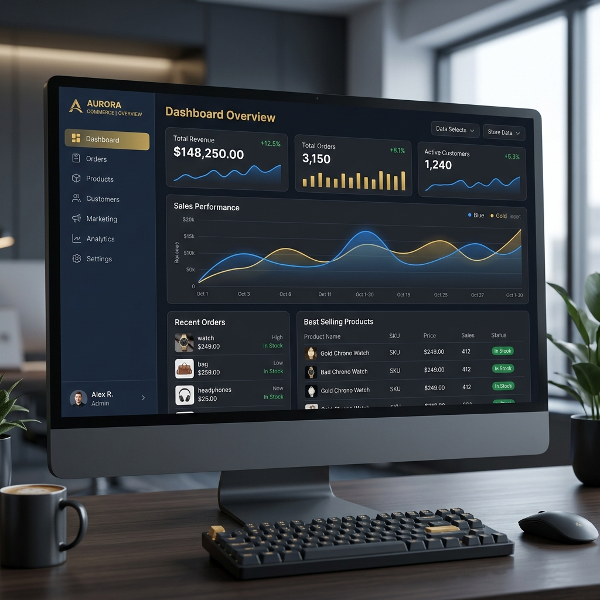
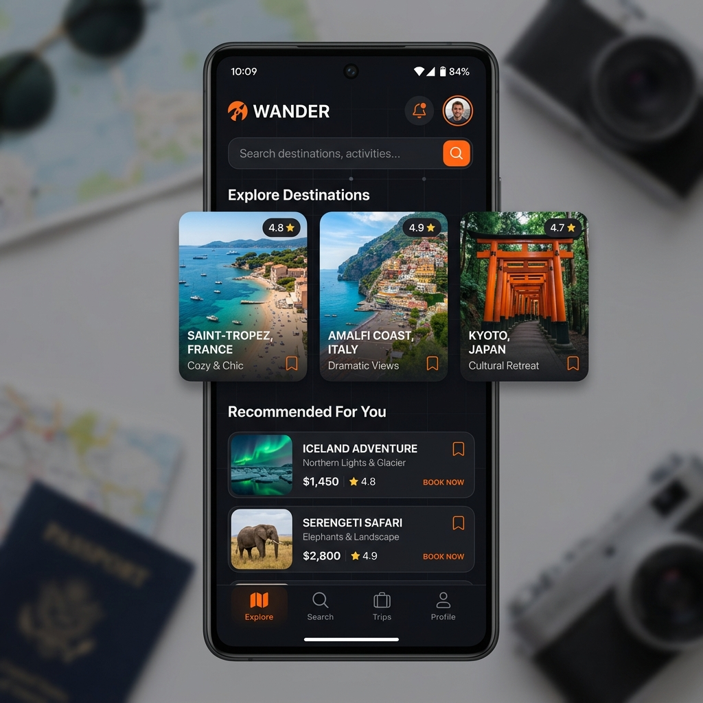
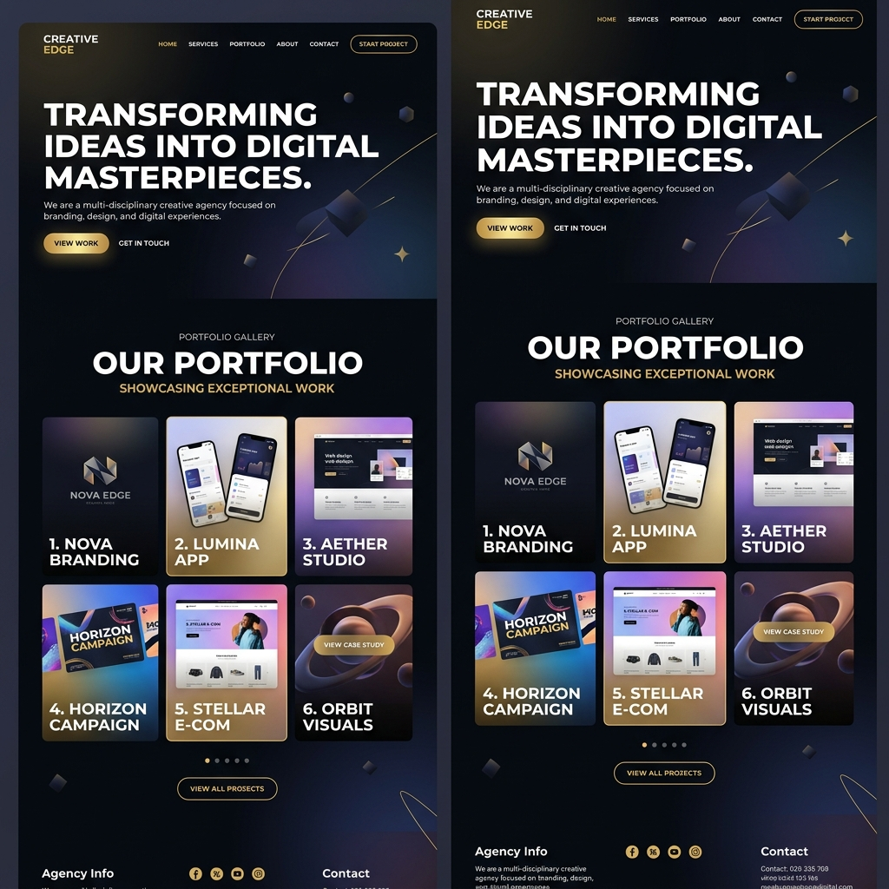

My Projects
A curated collection of my latest work, ranging from web applications to creative UI designs.




InsightEngine Data Tool
Designed to synthesize raw datasets into actionable intelligence, this tool leverages custom visualization engines for interactive trend analysis and forecasting.